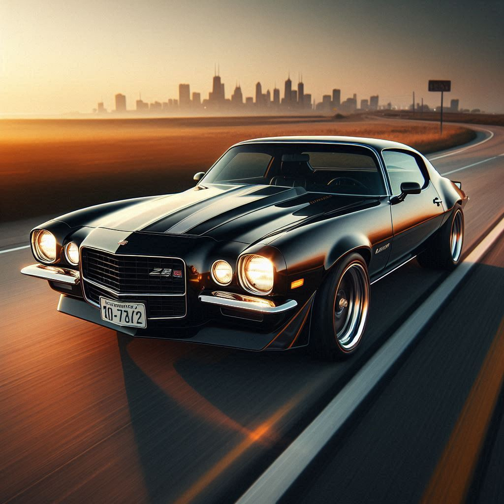
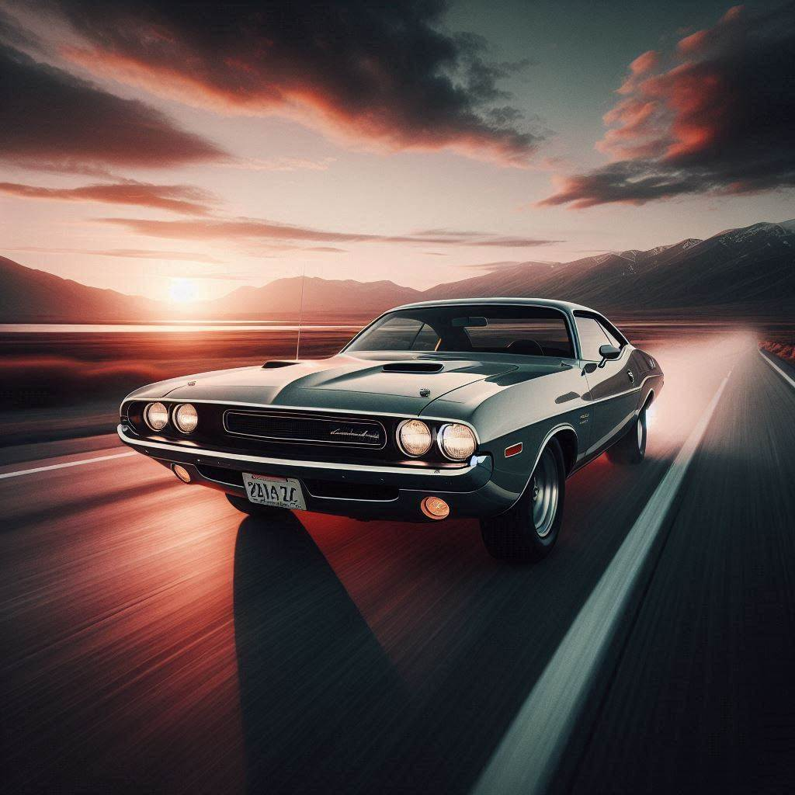
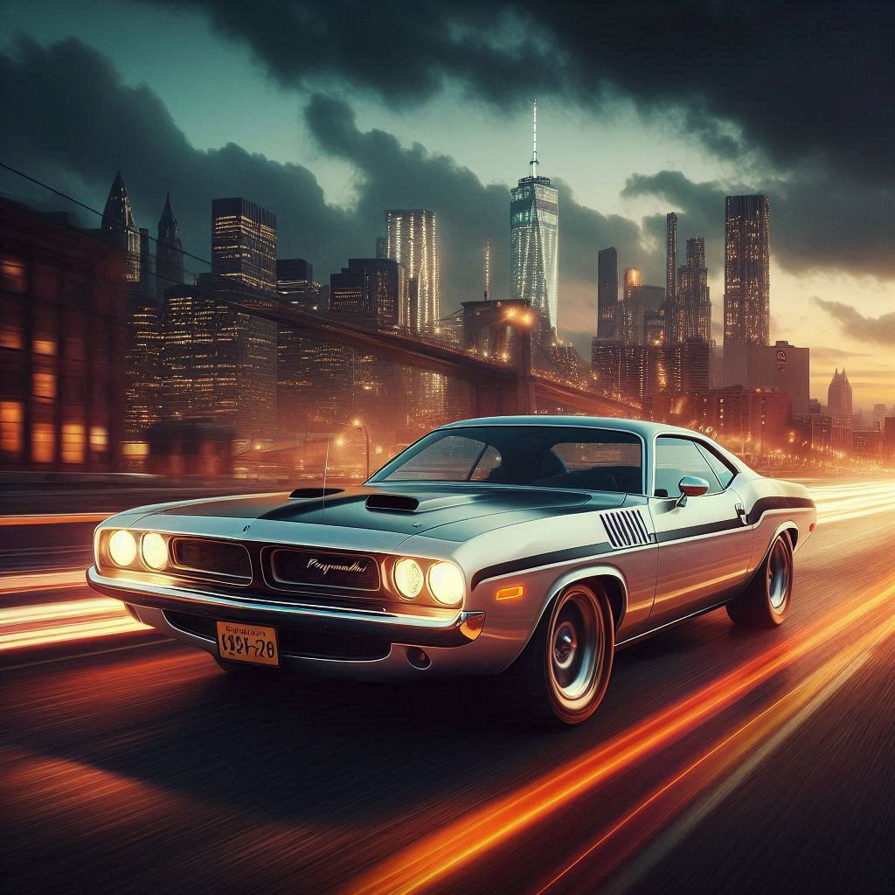
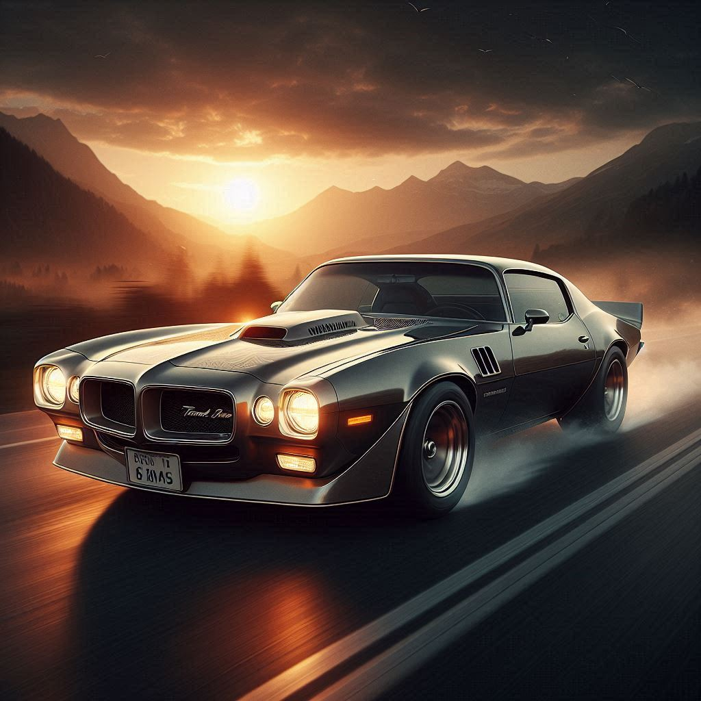
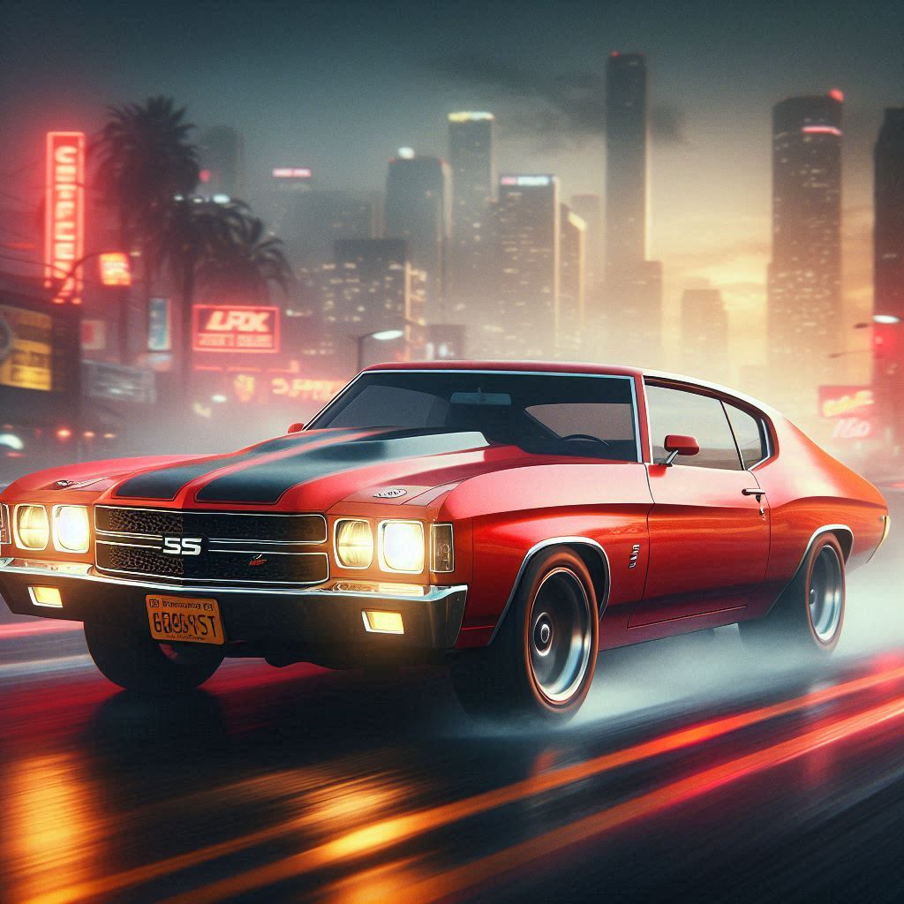

-
Chevrolet Camaro Z28
Descrição
O Chevrolet Camaro Z28 é um herói veloz dos anos 1970, conhecido por seu motor V8 potente e seu design agressivo. Ele enfrenta qualquer desafio na estrada, combinando desempenho e estilo de maneira inigualável.
-
Dodge Challenger
Descrição
O Dodge Challenger dos anos 1970 é um verdadeiro guerreiro, com um design robusto e motores poderosos. Seu espírito indomável o torna um símbolo de desempenho e liberdade, desafiando qualquer oponente na estrada.
-
Ford Mustang Boss 302

Descrição
O Ford Mustang Boss 302 é o mestre das pistas, famoso por sua alta performance e design aerodinâmico. Com um motor V8 poderoso, ele se tornou uma lenda, sempre pronto para vencer qualquer corrida.
-
Plymouth Barracuda
Descrição
O Plymouth Barracuda, ou 'Cuda, é um ícone agressivo dos anos 1970. Com um design distinto e motores potentes, ele domina as ruas, impressionando todos com sua velocidade e estilo únicos.
-
Pontiac Firebird Trans Am
Descrição
O Pontiac Firebird Trans Am é o herói icônico com o emblema do pássaro de fogo. Seu visual marcante e desempenho vigoroso o tornaram uma lenda, sempre pronto para enfrentar qualquer desafio com estilo e potência.
-
Chevrolet Chevelle SS
Descrição
O Chevrolet Chevelle SS é o titã dos muscle cars dos anos 1970, com motores de alto desempenho como o lendário 454 V8. Ele representa a era de ouro dos carros esportivos, combinando potência bruta com um design clássico.